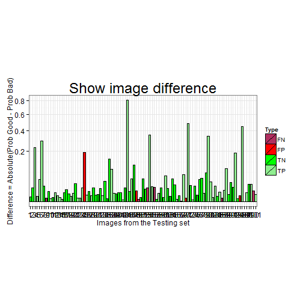

Classification model was created to classify images - bad/good automatically.
This application helps to assess model performance. It contains results of 405 models. First result is based on 2 images in training set and next results gets by incrementing number of images by 1.
Final model result based on 406 images in training set.
Image Classification
Model evaluation
Andrey
Data Scientist
Project description
Performance Metrics of final model
## Accuracy: 0.9009901
## TP: 44 FP: 4 FN: 6 TN: 47
## Precision: 0.9167 Recall: 0.88 F1 Score: 0.898
Learning curves
By plotting learning curves we can assess how does the accuracy of a learning method change as a function of the training set size

Summary
This plot is showing absolute difference Good and Bad probabilities. If it small them we can conclude that model not sure about whcih class should be for that image.
Additionally we can see which images was classified incorrectly as False Positives (FP) and False Negatives (FN)
